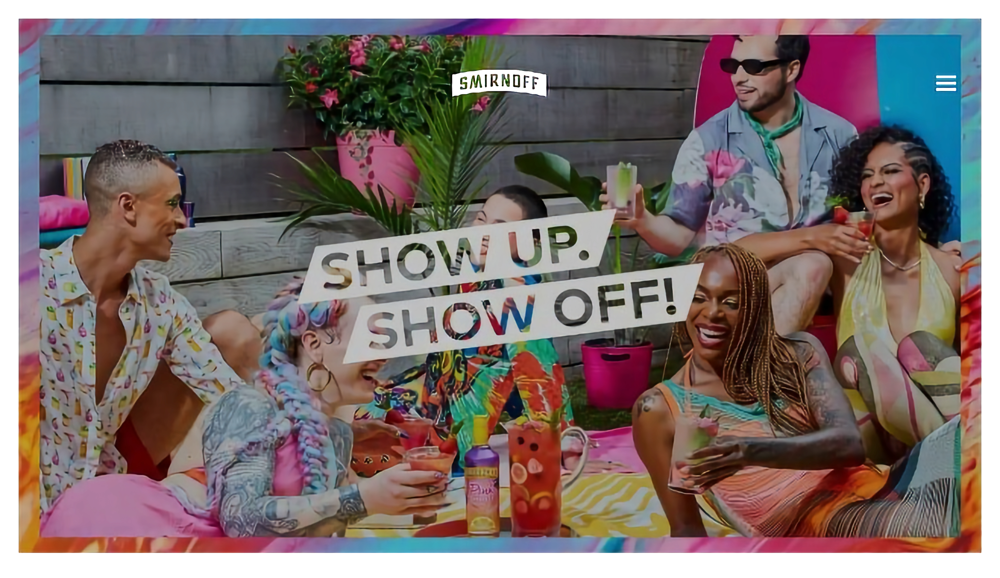
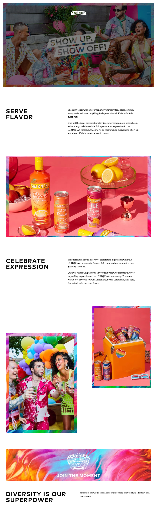
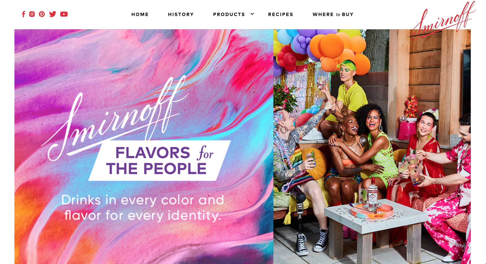
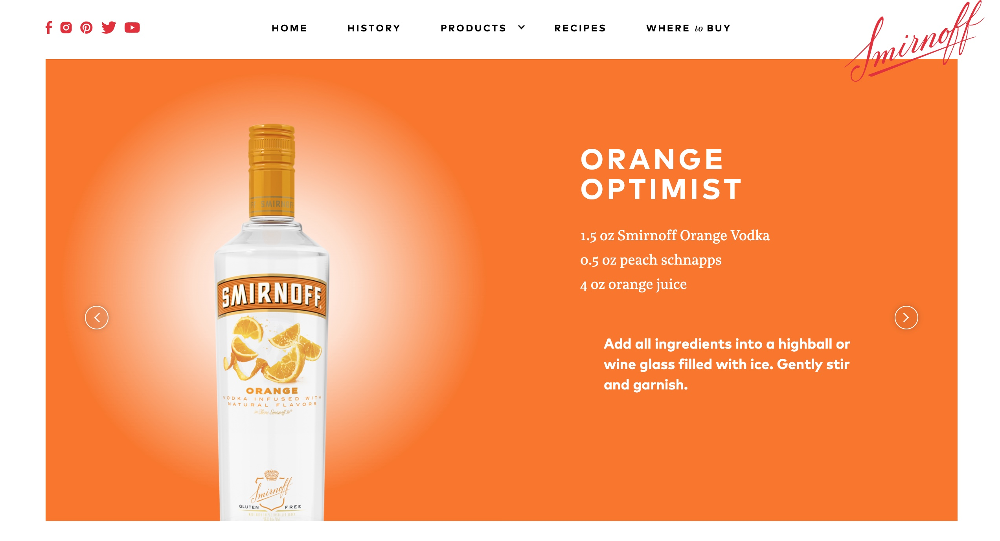
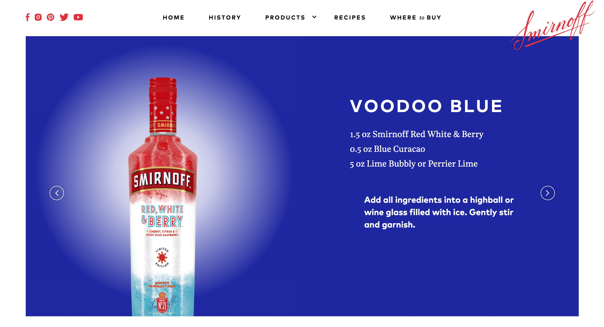
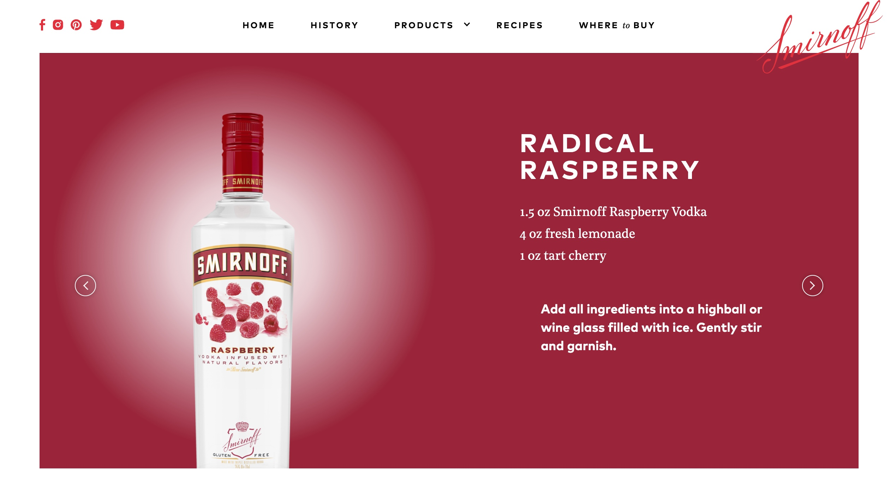

Smirnoff wanted to signal its unwavering support for the LGBTQ+ community with an always-on Pride campaign that evolved its existing platform, Color The Future. This new campaign needed to connect with consumers on- and off-premise, and present a fresh take on Pride.
I created the campaign name Show Up. Show Off! For The People and worked with strategy and account to build a colorful platform that celebrated the power of intersectionality and inclusivity. This campaign was designed to run not only during Pride month, but year-round, via vivid branding, messaging, and experiential activations.
This centered around the brand hosting Drag Brunch Show Offs in key markets, where queens and kings would "show up and show off" for The People's Crown. We identified talent, locations, and influencers from the community to support the campaign, including our drag queen host Shea Couleé, and LGBTQ+ organizations that could benefit directly via grants.
I contributed campaign messaging for the official website, social media, press announcements, POS, and more. I also named a range of cocktails for the brand, which played off an aura theme.




